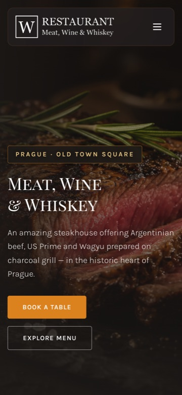
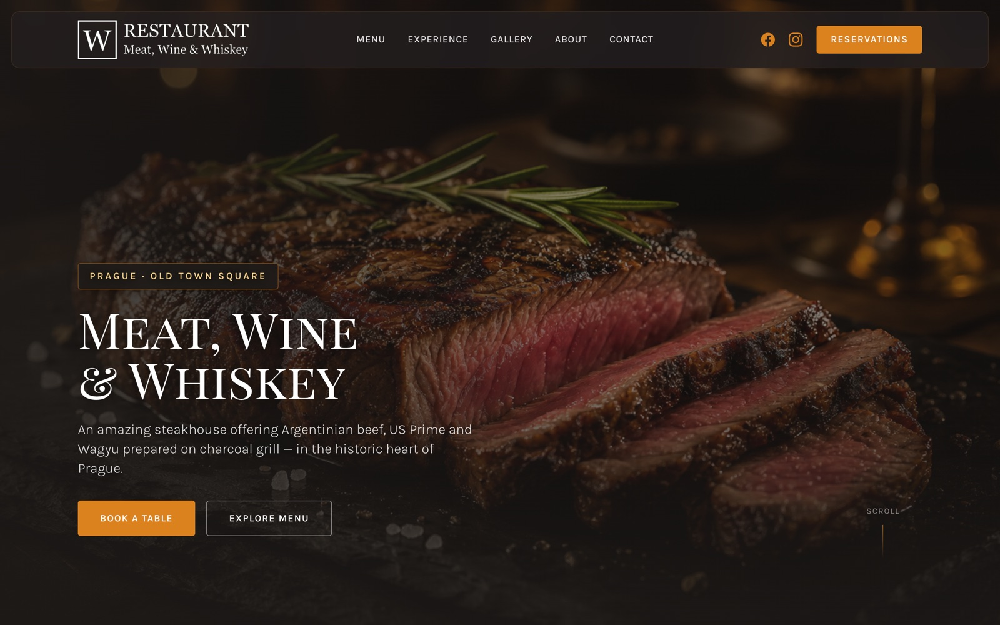
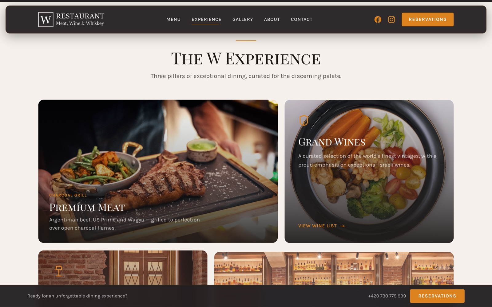
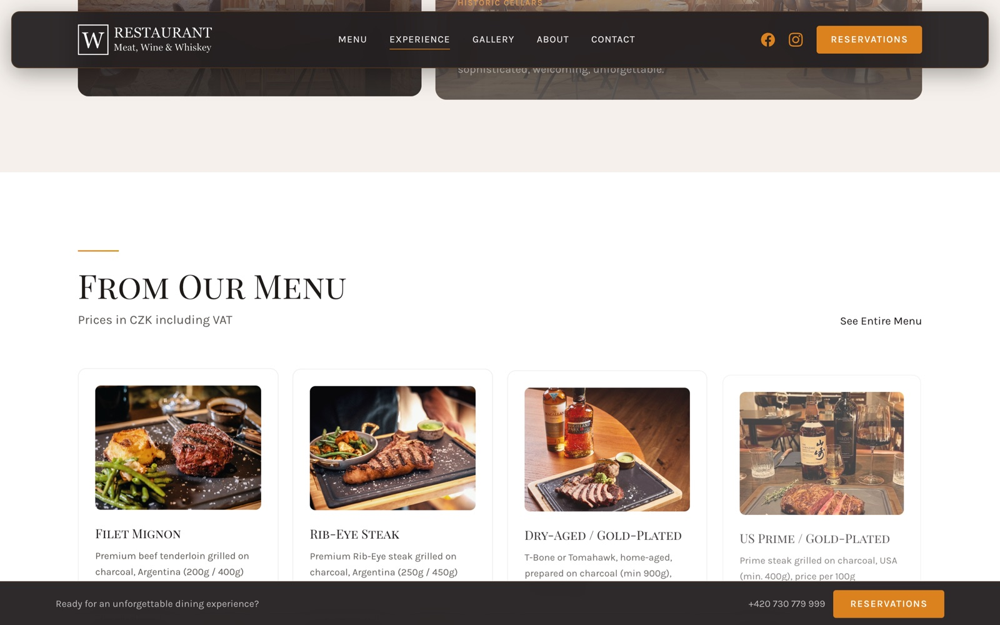
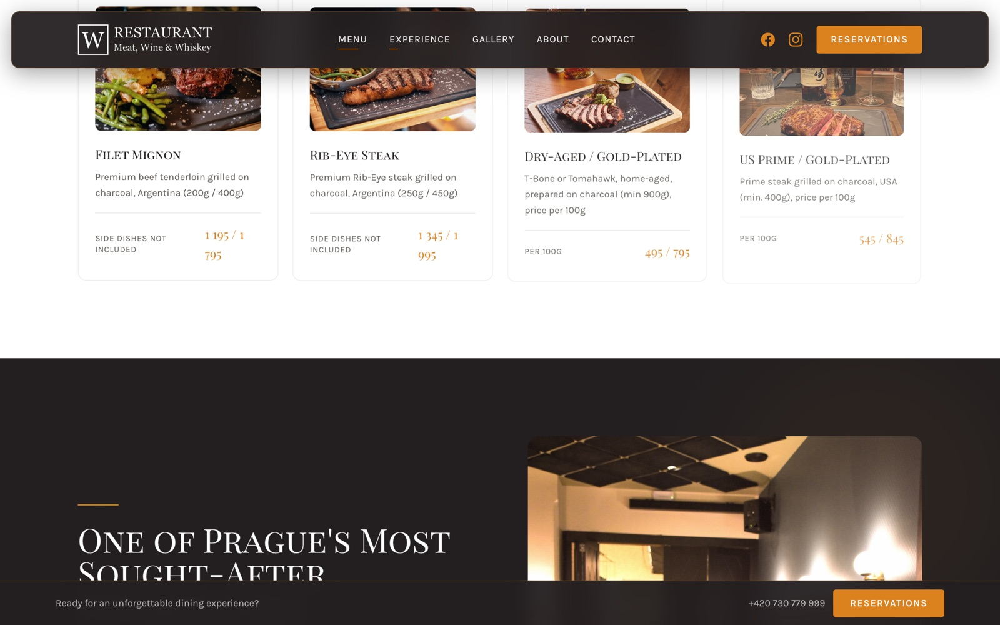

W Steak Restaurant
Meat, Wine & Whiskey
Návrh modernizace hlavní stránky wrestaurant.cz — prémiové rozhraní, vylepšené UX a mobilní zážitek pro jeden z nejvyhledávanějších steakhouseů v Praze.
Návrh modernizace hlavní stránky wrestaurant.cz — prémiové rozhraní, vylepšené UX a mobilní zážitek pro jeden z nejvyhledávanějších steakhouseů v Praze.
Hosté W Steak Restaurant hledají prémiový zážitek. Web je prvním kontaktem se značkou. Moderní design roku 2026 posiluje positioning Meat · Wine · Whiskey a vede k akci — rezervaci stolu.
Fullscreen fotografie, jasný nadpis a dvě CTA tlačítka: „Book a Table“ a „Explore Menu“. Host okamžitě chápe hodnotu a další krok.
Plovoucí menu se skleněným efektem, adaptace při scrollu, sticky tlačítko Reservations — konverze dostupná na každé obrazovce.
Čtyři karty: Meat · Wine · Whiskey · Ambience — vizuálně představují jedinečnost restaurace bez dlouhého textu.
Top položky s fotografiemi a cenami v CZK. Snižuje bariéru výběru a motivuje k přechodu na celé menu.
Plynulé scroll-reveal efekty, statistické počítadla, hover efekty — živý prémiový zážitek bez přetížení.
Playfair Display SC + Karla, paleta #231F20 / #DB821F — v souladu s firemním stylem W Restaurant.

Většina turistů hledá restauraci u Staroměstského náměstí z mobilu. Mobilní UX přímo ovlivňuje počet rezervací.




Lehký statický stack bez těžkých frameworků — maximální rychlost, snadná údržba a nízké náklady na hosting.
CTA „Reservations“ v hero, navigaci, sticky baru a patičce — host vždy vidí cestu k rezervaci.
Vizuál úrovně fine dining: tmavé tóny, zlato, typografie — odpovídá cenovému segmentu.
Profesionální prezentace menu, whiskey baru a interiéru zvyšuje vnímanou hodnotu.
Čisté HTML, meta tagy, strukturovaný obsah — lepší indexace v Google.
Interaktivní koncept je již k dispozici k prohlížení. Lze otestovat s týmem, získat zpětnou vazbu a rozhodnout o nasazení.
Tento dokument doprovází neoficiální koncept redesignu. Veškeré brandové materiály patří W Steak Restaurant. Koncept byl vytvořen s respektem k původnímu positioning restaurace.
Autor konceptu: Zirvey
Oficiální web: wrestaurant.cz
Demo konceptu: zirvey.github.io/w-steak-restaurant-landing-page